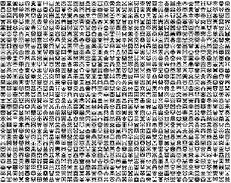
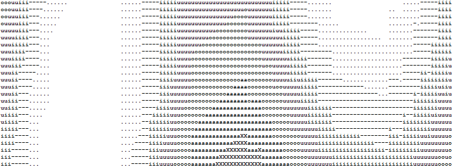
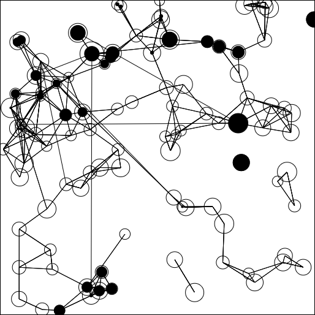
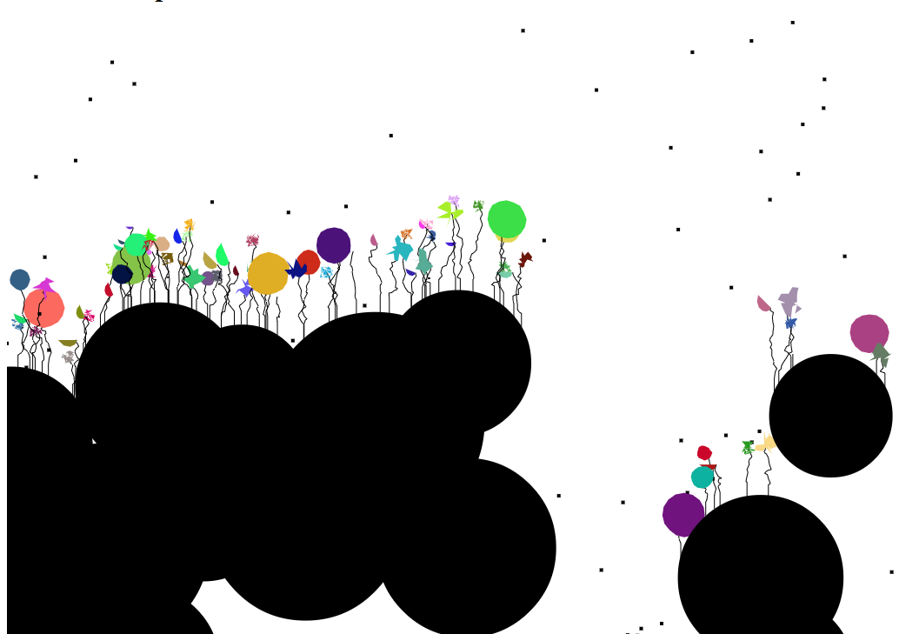
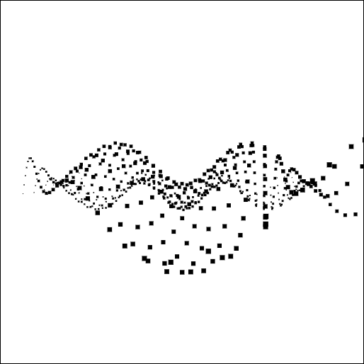

Space invaders are easy and fun to generate randomly. Just generate random pixels on one half and then mirror them.

Rudimentary plasma effect demo rendered in ASCII.

I was obsessed with evolutionary algorithms when I made this. It randomly connected nodes into a graph and then the nodes could "pump" liquid between them. I took the pump level at certain nodes as the "answer" to evaluate against an arbitrary fitness function. And then I varied the layout of the networks while evaluating their performance against the fitness function and selecting the best performer as the graph layout to base the next generation on. It never resulted in any very performant networks, but it was a fun experiment.

Spores fall from the sky and grow flowers where they land.

I made this in high school when I was learning JavaScript. I was interested in 3D graphics and software renderers so I decided to try to make a simple point renderer and do something interesting with it. I ended up drawing this simple sinewave landscape from a rotating camera perspective using the simple trig that I knew at the time.
All made in high school